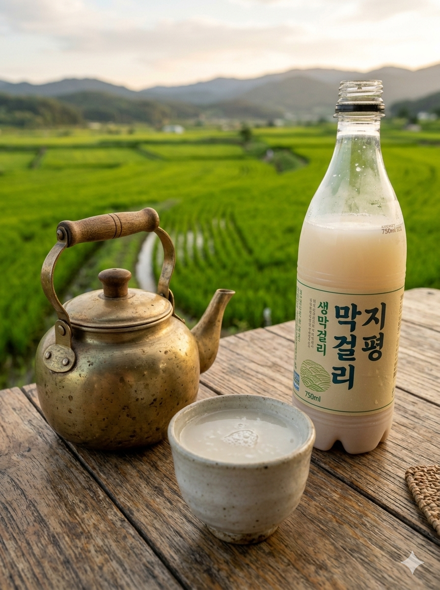

Membuat makgeolli dengan starter berbeda
dan pada suhu berbeda

Proyek ini berfokus pada pembuatan Makgeolli, minuman tradisional Korea, melalui proses fermentasi beras yang menggunakan starter fermentasi alami bernama Nuruk. Saya sedang meneliti bagaimana penggunaan berbagai jenis starter dan variasi suhu lingkungan dapat memengaruhi karakteristik akhir dari minuman tersebut. Fokus utama penelitian ini adalah untuk memahami interaksi antara mikroorganisme dalam Nuruk dengan kondisi termal selama masa inkubasi. Hasil akhirnya diharapkan dapat mengungkap profil rasa, aroma, serta kadar alkohol yang paling optimal berdasarkan kombinasi variabel tersebut. Dengan menganalisis data ini, saya bertujuan untuk menemukan metode standarisasi kualitas Makgeolli yang autentik namun tetap konsisten secara ilmiah.